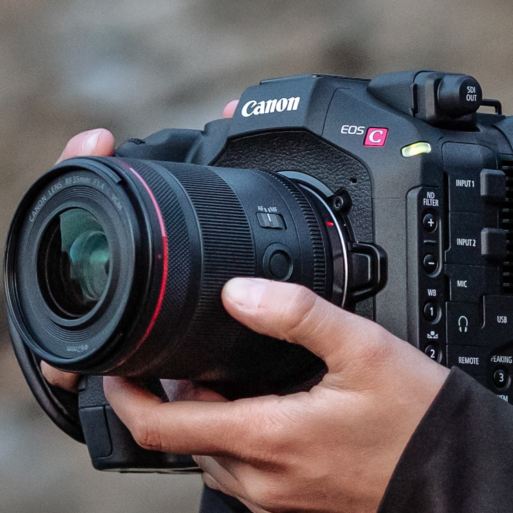
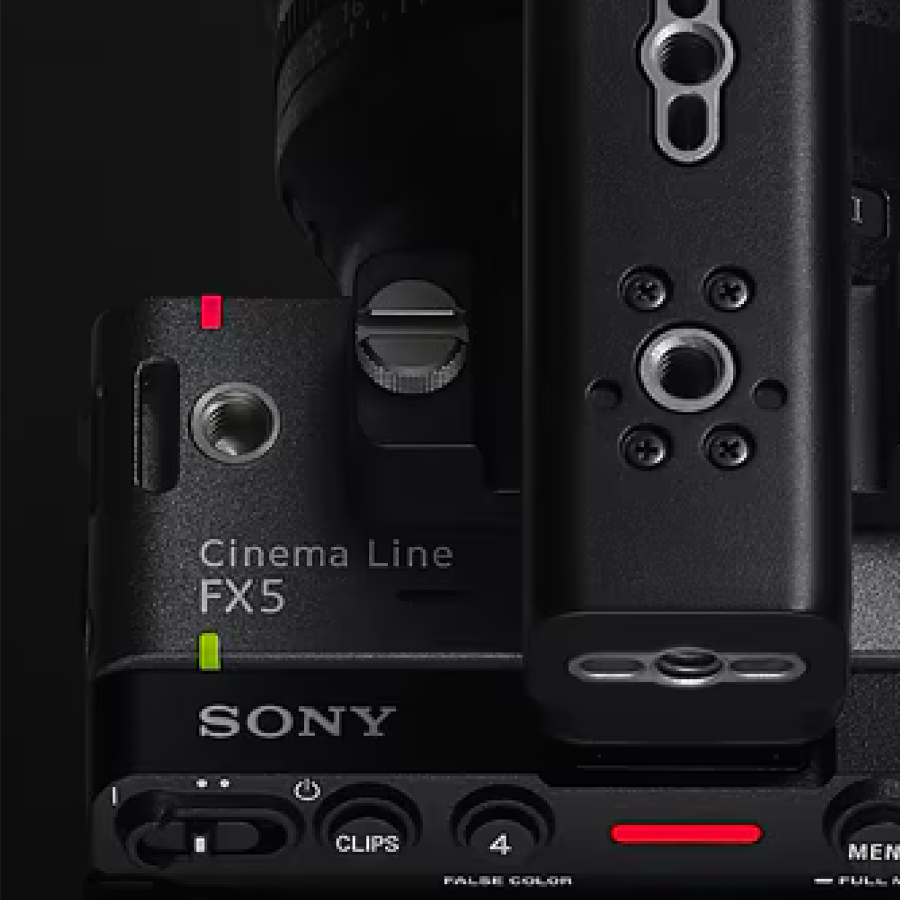
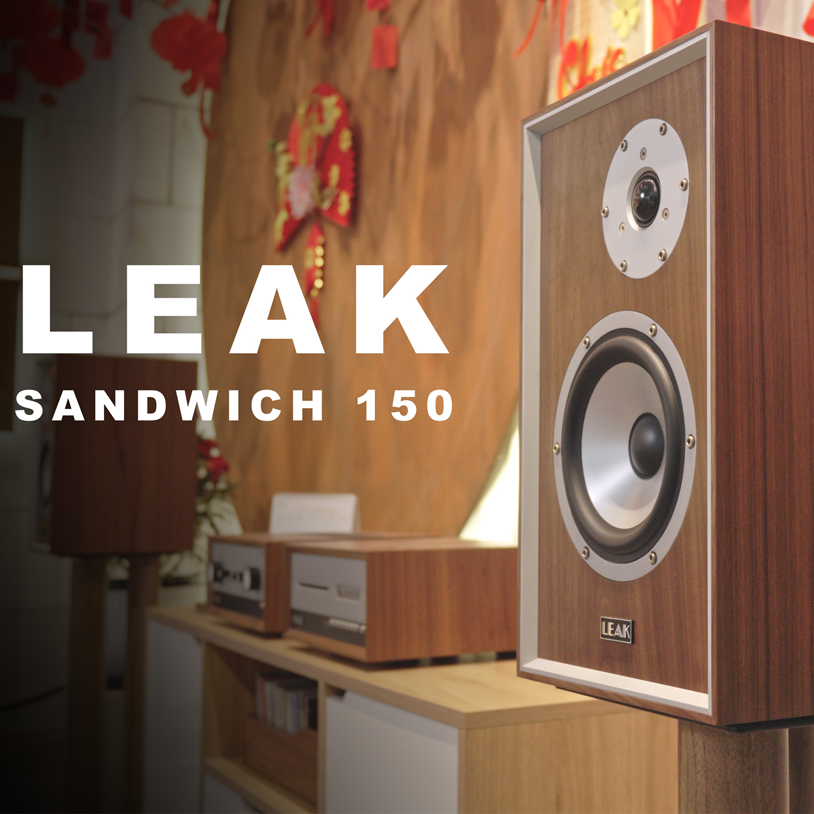
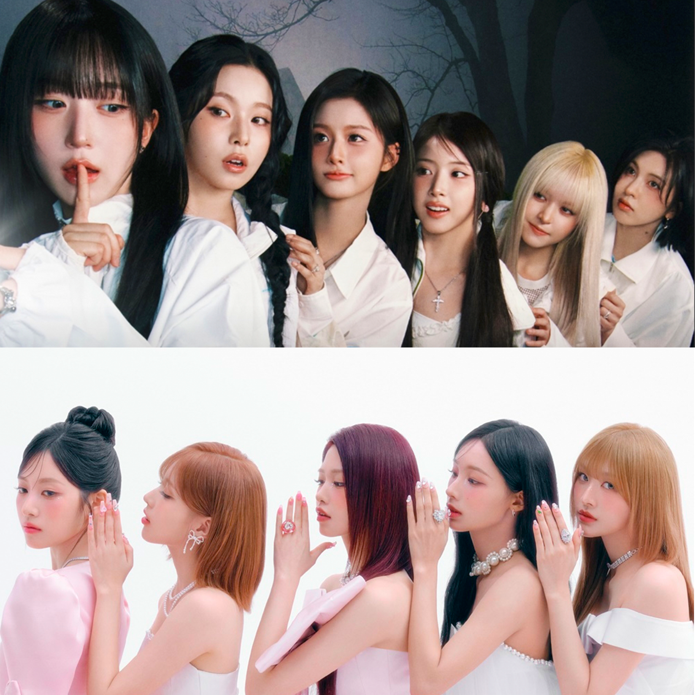
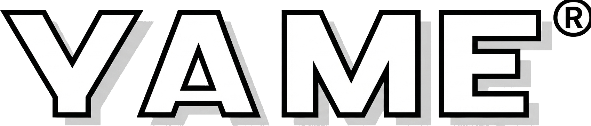

Camera / ReviewCanon / Cinema EOS
EOS C80.
THINK CINEMA.
A closer look at a compact full-frame cinema tool.
Cameras / Sound / Stories

Camera / ReviewCanon / Cinema EOS
A closer look at a compact full-frame cinema tool.

Camera / ReviewSony / Cinema Line
What Sony’s filmmaking camera brings to the shoot.

Audio / ReviewLEAK / Sandwich 150
A classic speaker idea, revisited for the listening room.

News / CultureNews / Culture
리센느와 엔믹스의 2026 TMA 수상 소식.
 News / Live
News / Live
News / Live culture
The small rooms behind the loudest new scenes.
 News / Music
News / Music
News / Music
A record asks for your time, your hands and your attention.
 News / Music
News / Music
News / Music
Producers are letting imperfect spaces back into the mix.
News / Music
News / Music
Four ways a city changes through headphones after midnight.
Featured article 1 of 8: Canon EOS C80.
 Review / Camera
MIRRORLESS
Review / Camera
MIRRORLESS News / Video
ONE CAMERA.
News / Video
ONE CAMERA.Community /

StudioMADE FOR PEOPLE WHO PRESS RECORD AND CARE WHAT HAPPENS NEXT.
Share field notes, practical camera questions, music discoveries and production ideas with the community.
Visit on YouTube